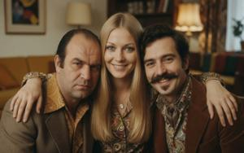
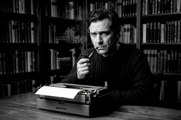

Любодар Влошек
{kind=link}
Любодар Ласлов Влошек (згур.: Ljubodar Laslov Vloszek; дегл.: Lübodar Laslov Vlošek; глаг.: ⰎⰣⰁⰑⰄⰀⰓ ⰎⰀⰔⰎⰑⰂ ⰂⰎⰑⰞⰅⰍ; 1939–2001) — верхнепаннонский писатель и политик. Благодаря политической благонадёжности, таланту рассказчика и умению своевременно вписаться в конъюнктуру он стал самым коммерчески успешным писателем Народной Республики, а вовремя бежав на Запад и сделав карьеру в эмигрантской политике, дослужился с годами до поста первого президента Згурской Республики.
Его место в истории остаётся спорным. Сам Влошек до конца жизни настаивал, что всегда был тайным диссидентом. Западная пресса приняла это утверждение с восторгом; паннонские современники встретили его скептичнее. Президентство Влошека (1996–2001) запомнилось прежде всего тем, что он методично расставлял родственников и клиентов на посты в гражданском госаппарате: к моменту его смерти на посту такая кадровая политика вытеснила из коридоров власти военных командиров, ещё в 1995 году державших страну в своих руках.
Ранние годы (1939–1957)
Влошек родился в 1939 году в Третьем округе Вроновицы, четвёртым из шести детей. Его отец Ласло занимал мелкую канцелярскую должность в Министерстве радио и телеграфа; мать нигде не работала. Семья была из низов среднего класса — люди уважаемые, но без денег и связей.
Венгерская оккупация лишила отца места: славянских служащих министерств систематически увольняли, и Ласло Влошек не стал исключением. Семья с трудом сводила концы с концами, перебиваясь тем немногим, что могла дать родня. Впоследствии Влошек утверждал, будто оба родителя участвовали в коммунистическом Сопротивлении; документальных подтверждений этому нет.
После освобождения Верхней Паннонии Ласло Влошека уже через несколько месяцев восстановили на государственной службе — какие бы симпатии ни питала семья, с новым порядком они прекрасно уживались. Ласло сменил своё венгерское имя на славянское Влодислав, что было обязательным по закону с 1945 года, но судя по всему, сделал это охотно. По всем доступным свидетельствам, Влошеки были искренними сторонниками коммунистов.
Любодар учился в средней школе Третьего округа и в пятнадцать лет вступил в Союз коммунистической молодёжи. Особыми успехами в учёбе он не отличался, но славился красноречием и явной тягой к сочинительству.
Образование и начало карьеры (1957–1965)
В 1959 году Влошек отслужил срочную службу и поступил на факультет журналистики Нового университета. Учился он вполне сносно, но без блеска, и в 1964 году окончил университет без отличия. К тому времени он уже печатался в нескольких вроновицких газетах и продолжал сотрудничать с ними после выпуска.
Именно тогда, если верить более поздним слухам, к Влошеку обратились представители НООН и завербовали его в качестве гражданского осведомителя. В мемуарах он категорически это отрицал, и подтверждающих документов до сих пор не опубликовано. Его дальнейшая карьера намекает на тесные связи с НООН. Если бы Любодару и вправду предложили сотрудничество, вряд ли он отказался бы: благонамеренный коммунист и патриот, он был бы только рад послужить родине.
«Тайный дневник королевы Адели» (1965)
Первое значительное произведение Влошека не было художественным — или, по крайней мере, было опубликовано не в этом качестве. В 1965 году он опубликовал текст, выдав его за личный дневник королевы Адели — будто бы найденный недавно среди бумаг частного собрания. Документ был подделкой, что было очевидно с самого начала, хотя официально никогда не признавалось в годы Народной Республики.
«Дневник» изображал Адель распутной авантюристкой, вступавшей в интимные связи со множеством мужчин и женщин, и эпизодически с некоторыми животными; шпионкой, работавшей одновременно на британскую, американскую и советскую разведки; и циничной манипуляторшей, чей публичный имидж благотворительницы скрывал преступления против паннонского народа.
В Верхней Паннонии вышло сокращённое издание с вычищенными цензурой скабрёзными местами1; полную версию опубликовало в Вене издательство, общеизвестно связанное с управлением зарубежных операций НООН2. Отечественная версия выдержала несколько переизданий, была официально признана подлинным историческим документом, а в 1968 году на неё сослался в своей речи сам генералиссимус Гоубка — после чего уже никто не мог оспаривать подлинность.
Радловиана (1968–1975)
«Приключения капитана Радлова» (1968)
В 1968 году Влошек выпустил свой дебют в художественной прозе: шпионский роман о контрразведчике НООН капитане Радлове3. Сюжет строится вокруг заговора: автоконцерны трёх бывших держав Оси — западногерманский «БМВ», итальянский «Феррари» и японский «Мицубиси» — сговорились выкрасть технологические секреты Гоубкаславского автомобильного завода. Для этого они засылают трёх агентов: бывшего эсэсовца, мафиозо и ниндзя. Радлов побеждает всех троих, разоблачает заговор и женится на красавице-блондинке, инженере из конструкторской группы «Дравы 67».
Роман получился крепким развлекательным чтивом: сюжет ладно скроен, темп ровный, политика вплетена в действие, а не подана отдельными лекциями, — чем и выделялся на общем фоне беллетристики НРВП. Роман хорошо продавался и сделал двадцатидевятилетнего Влошека самым известным писателем Верхней Паннонии.
«Приключения майора Радлова» (1970)
В продолжении 1970 года4 повышенный в звании Радлов отправляется в США. Американское общество описано в точном соответствии с идеологическим установками НРВП: магнаты в цилиндрах вершат дела в кабинетах красного дерева, гангстеры в стиле эпохи Сухого закона разгуливают в фетровых шляпах с автоматами Томпсона, линчеватели из Ку-клукс-клана орудуют прямо на улицах Нью-Йорка, а угнетённый пролетариат только и ждёт социалистической революции. Главными противниками выступают наёмный убийца ЦРУ Джон Киллер и соблазнительница Виктория Сикрет — по части имён автор, очевидно, не проявил большой изобретательности.
«Приключения майора Радлова» разошлись ещё лучше первой книги. Позже роман перевели и издали в США в небольшом калифорнийском маоистском издательстве5 — Влошек оказался в числе редких авторов НРВП, чьи книги дошли до западного читателя.
«Приключения полковника Радлова» (1975)
В третьей книге Радлов, уже полковник, отправляется на Луну с заданием предотвратить вторжение селенитов6. С астрономией и космонавтикой у Влошека вышло не очень хорошо, и роман подвергся немалой критике за явные научные ошибки элементарного рода. Продажи не дотянули до первых двух книг, а паннонские рецензенты — обычно не склонные без повода нападать на лояльного автора — писали о книге заметно прохладным тоном.
К тому времени Влошек уже набросал план четвёртой книги — «Приключения генерала Радлова», где серия должна была завершиться миссией на Солнце. Она не была написана.
Личная жизнь (1960–1977)
{kind=link}

Первый роман о Радлове был посвящён «моей жене Славице»; второй — «моей любимой жене Урсуле»; третий — «моему бесценному ангелу Изабель, самой восхитительной женщине на свете». По этим посвящениям можно проследить восхождение Влошека по социальной лестнице, ступень за ступенью.
Его первая жена Славица училась с ним в университете и стала ничем не примечательной журналисткой. Первый роман о Радлове хорошо продавался. Авторские гонорары были одним из немногих легальных источников частного богатства в социалистическом мире, вклчая НРВП. Разбогатевший Влошек развёлся со Славицей, выделив ей щедрые алименты, и женился на Урсуле Рачевой — дочери патриарха паннонской соцреалистической литературы Доменыка Рачева, председателя Союза писателей НРВП, трёхкратного лауреата премии Гоубки, «паннонского Горького».
После второго романа радловианы Влошек официально стал самым богатым человеком в Верхней Паннонии. Ему открылся доступ в высшие круги элиты. Его общества искал в числе прочих Борис Гоубка по прозвищу Борко, — единственный сын верховного вождя и заместитель начальника НООН. Они крепко сдружились. В 1973 году Влошек развёлся с Урсулой и женился на Изабель Рыжак, давней любовнице Борко. Как позже признавался сам Влошек, брак был задуман, чтобы прикрыть роман Борко и Изабель, а Влошеку отводилась роль подставного мужа; впрочем, фиктивным этот союз был не вполне. Борко, Влошек и Изабель фактически состояли в браке втроём, что ещё больше сблизило обоих мужчин и укрепило их взаимное доверие. Эти отношения оказались роковыми для Борко и Изабель — а в каком-то смысле и для самого Влошека.
«Вроновица в 2027 году» (1977)
В 1977 году Влошек опубликовал утопический научно-фантастический роман «Вроновица в 2027 году»7. Он был заказан самим Борисом Гоубкой и посвящён ему. Этот роман стал переломным моментом в карьере писателя.
«Вроновица в 2027 году» изображает этот город столицей коммунистического мира. Пролетарские революции смели последние капиталистические правительства; Советский Союз и Югославия, признав явное превосходство марксизма-гоубкаизма, добровольно подчинились Вроновице как идеологическому центру. Город отстроен заново как витрина социалистического будущего: мраморные небоскрёбы вздымаются над километровыми проспектами, обсаженными цветущими липами; над крышами по чистому небу чертят ровные следы летающие «Дравы 2025» на атомной тяге. Каждый гражданин занимает отдельную квартиру из расчёта одна комната на человека, бесплатно получает товары по пневмопочте и смотрит цветное телевидение. Никто не стоит в очередях; дефицита не существует.
На протяжении романа не раз указывается, что городские бульвары украшены исполинскими памятниками Северыну Гоубке, а сам он поминается в каждой главе как «величайший вождь и основатель нашего государства». Но верховная власть в 2027 года принадлежит не ему. Правящая фигура подаётся без имени, как «вождь, чьё лицо и голос так похожи на лицо и голос нашего великого основателя». Цензура пропустила эту формулировку без единого замечания. Северын Гоубка прочёл её иначе.
Ответ прозвучал на Пленуме ЦК в октябре 1977 года: Гоубка заклеймил роман за «идеологическую слепоту» и «гротескную карикатуру на коммунистическое будущее». В тот же день книгу сняли с продажи; Влошека исключили из Союза писателей, а его сочинения вычеркнули из официальных каталогов. Одновременно оперативная группа НООН начала систематические аресты лиц из окружения Бориса Гоубки. Арестовали и Изабель Влошек; все арестованные исчезли без следа. В марте 1978 года Борис Гоубка умер от сердечного приступа. В официальном свидетельстве о смерти указали естественную причину; независимая экспертиза не проводилась.
Арест самого Влошека, казалось, был вопросом времени; тем не менее в апреле 1978 года он получил выездную визу под предлогом участия в Съезде авторов детективной литературы социалистических стран в Сараево. Разрешение на выезд не могло быть получено без одобрения НООН; сам Влошек позже объяснял его ошибкой или недосмотром какого-то чиновника. Он благополучно выехал в Югославию, сразу же улетел через Австрию в Западную Германию и вскоре явился в мюнхенское бюро «Радио Свобода».
Его заявление прозвучало в эфире уже через неделю и произвело сенсацию: Влошек подтвердил, что «Тайный дневник королевы Адели» был сфабрикован по указанию НООН, публично извинился перед королевой в изгнании Людмилой и объявил, что и серия о Радлове, и «Вроновица в 2027 году» с самого начала были тайными пародиями, скрывавшими подрывное содержание под маской лояльного развлекательного чтива. Он объявил себя диссидентом с детства: наконец-то он вырвался из-под власти режима, которому противостоял всю жизнь. Западная пресса встретила это разоблачение с восторгом и почти без скепсиса.
Эмиграция (1978–1990)
«Радио Свобода»
{kind=link}

Благодаря своему заявлению Влошек сразу получил место на паннонской службе «Радио Свобода». В своих передачах он освещал политические события внутри Народной Республики, комментировал литературные события и делился воспоминаниями о жизни в НРВП. Ведущим он оказался способным: тот же дар рассказчика, что вытягивал его романы, придавал увлекательность и его эфирам, а осведомлённость о внутреннем положении страны придавала им достоверность, какой эмигрантская журналистика редко могла похвастаться.
Эти передачи закрепили характерный публичный имидж эмигранта. Влошек изображал свои связи в элите НРВП не как сотрудничество, а как внедрение: его демонстративная лояльность, его премии, его посвящения в романах о Радлове — всё это, по его словам, было лишь расчётливым маскарадом тайного противника режима. Довод звучал не совсем неправдоподобно, но поднимал неудобные вопросы о «Тайном дневнике королевы Адели». Большинство западных слушателей, впрочем, не вдавались в неловкие подробности.
«Приключения заключённого Радлова» (1981)
В 1981 году Влошек опубликовал «Приключения заключённого Радлова»8, вновь обратившись к своему сквозному персонажу, но в кардинально иных обстоятельствах. Радлов, теперь узник исправительно-трудового лагеря НРВП, в одиночку ведёт кампанию сопротивления, раскрывает заговор лагерного начальства, продающего политзаключённых на опыты китайским фармацевтическим компаниям, и бежит, чтобы передать улики корреспонденту «Радио Свобода». Политическая окраска романа диаметрально перевернулась против оригинальной серии; в остальном ни сюжет, ни характеры лучше не стали. Западные рецензенты, благодарные за идеологический посыл, приняли роман тепло. Паннонские эмигрантские читатели высказали более разнообразные мнения.
Роман был посвящён «моей любимой Кэролин, чьи ясные глаза увидели то, что я мог лишь скрывать». Посвящение адресовалось Кэролин Уитмор, выпускнице славистики Корнеллского университета, на двадцать лет младше Влошека. Они познакомились в 1979 году на вашингтонском симпозиуме по восточноевропейской диссидентской литературе и поженились год спустя. Уитмор была активной правозащитницей со связями в отделе культурных программ Государственного департамента и пылкой поклонницей творчества Влошека; одна из первых на Западе, она отстаивала тезис, будто серия о Радлове с самого начала была блестящим образцом целенаправленной пародии. Влошек не пытался опровергнуть эту трактовку.
Фонд королевы Людмилы
Положение Влошека в эмиграции упрочилось благодаря Фонду королевы Людмилы — культурной организации, зарегистрированной в Вашингтоне; её в значительной мере финансировал муж Людмилы, нефтяной магнат армянского происхождения Зограб Саркисян. Первый грант от фонда Влошек получил в 1983 году, а в 1985 году вошёл в его консультативный совет. Должность давала институциональный вес и скромный, но надёжный доход. Этот же Фонд опубликовал нехудожественную книгу Влошека «О моральной стойкости» (1983) — трактат о нравственном сопротивлении тоталитарному режиму, посвящённый «моим друзьям и родственным душам Вацлаву Гавелу и Александру Солженицыну». Посвящение не прокомментировали ни тот ни другой.
Уже тогда Влошек пользовался своим положением в манере, предвосхищавшей его позднейшую деятельность. К середине 1980-х несколько его родственников получили от фонда гранты на различные эмигрантские программы благодаря тому, что Влошек частным образом помог им оформить заявки. Никто этого не заметил: суммы были небольшими, а субсидирование эмигрантской деятельности и так входило в уставные задачи фонда. Тем не менее привычка укоренилась: доступ к институтам Влошек использовал в интересах родни.
К концу 1980-х Влошек успел заслужить репутацию, весьма солидную по меркам эмигрантской политики. И эмигрантская пресса, и западные комментаторы в один голос называли его самым известным на Западе паннонским писателем и ведущим интеллектуальным голосом паннонской демократической оппозиции. Когда крах коммунизма в 1990 году открыл перспективу возвращения на родину, позиции Влошека были не хуже, чем у любой другой эмигрантской оппозиционной фигуры.
Посткоммунистическая карьера (1990–2001)
Возвращение в Верхнюю Паннонию (1990)
Весной 1990 года, после двенадцати лет эмиграции, Влошек вернулся во Вроновицу. Конфискованное имущество ему вернули, запрещённые книги реабилитировали. К нему одновременно обратились сразу несколько новосозданных демократических партий: каждая рассчитывала, что его имя добавит ей популярности.
Осенью 1990 года он баллотировался в парламент первым номером списка Паннонской партии демократического обновления. Обе националистические партии — Движение в защиту згурцев и Деглянский национальный фронт — получили примерно по сорок пять процентов мест, так что семь процентов ППДО оказались решающими. Влошек вошёл в парламент как фигура второго плана, но незаменимая при любом голосовании. И эта роль куда больше подходила его подлинным талантам, чем бескорыстный моральный авторитет, который он культивировал в эмиграции.
Гражданская война (1992–1995)
Когда в 1992 году вспыхнул вооружённый конфликт, Влошек — по происхождению згурец — выступил как нейтральный миротворец, стоящий выше этнических пристрастий. Логика была разумной вне зависимости от истинных мотивов: человек со связями и в згурском истеблишменте, и в западных институтах, необходимых для посредничества в любом урегулировании, был ценнее в качестве посредника, чем приверженца.
Самой важной инициативой Влошека в этот период стал проект 1994 года по восстановлению паннонской монархии. Влошек выступал одним из главных посредников между королевой в изгнании Людмилой и военно-политическими лидерами внутри страны, чьё содействие требовалось для любого сценария реставрации. В переговорах Влошек задействовал такой широкий круг личных связей — невзирая на давность и партийные границы, — что вызывал у некоторых наблюдателей подозрения, будто его старые контакты с НООН никогда полностью не прекращались. Проект рухнул вместе с убийством королевы Людмилы в конце 1994 года. Влошек покинул страну в течение нескольких дней, сославшись на реальные угрозы со стороны обеих враждующих группировок.
Президентство в Згурской Республике (1996–2001)
{kind=link}
После перемирия 1995 года Влошек вернулся и возобновил карьеру уже в рамках Згурской Республики. Реальная власть принадлежала полевым командирам, приобретшим вес на войне, — но этим командирам нужна была презентабельная гражданская вывеска для переговоров с западными правительствами. Влошек — с его западными регалиями, американской женой со связями в Госдепе и репутацией демократического интеллектуала, пусть и сомнительной, — был очевидным кандидатом. В 1996 году згурский парламент избрал его президентом республики.
Должность не давала исполнительной власти. Но Влошек и не пытался получить её напрямую. Взамен он приобрёл рычаг влияния. Военным вождям требовалось его содействие — подписи, публичные церемонии, звонки иностранным чиновникам, — а всё это можно было продать. За следующие пять лет Влошек расставил родственников, свойственников и клиентов на посты, влиятельные в коммерческом или аппаратном плане: руководство госпредприятий, лицензирующие органы, закупочные комитеты. Обе стороны понимали условия обмена, но редко проговаривали вслух. По меньшей мере в одном документально подтверждённом случае Влошек предложил некоему полевому командиру заступничество перед международными следователями по военным преступлениям, а взамен добился, чтобы его собственного племянника назначили председателем Вроновицкой торговой палаты.
Влошек умер на своём посту в апреле 2001 года. К тому времени его большая семья — дети от первого и четвёртого браков, племянники и более дальняя родня — занимала непропорционально большую долю гражданских постов в Згурской Республике. Постепенно, безо всякого решающего перелома, семья Влошека вытеснила из коридоров власти военных командиров, безраздельно доминировавших в 1995 году. Влошек не оставил после себя ни политической программы, ни прочной партии. Он оставил Влошеков.
Наследие
Литературная репутация Влошека остаётся неоднозначной. Романы о Радлове по-прежнему переиздаются как памятник массовой культуры эпохи Народной Республики. С политическим наследием всё понятнее. Влошеки — дети, племянники, свойственники и более дальняя родня, расставленные по постам за годы его президентства, — сохраняют влияние много лет после его смерти, образуя общеизвестную сеть в гражданской администрации и коммерческом секторе Згурской Республики. В этом смысле Влошеку действительно удалось построить нечто прочное — хотя несколько не то, что он обещал публично.
Главный вопрос историков — было ли его превращение сначала в диссидента, а затем в президента подлинным переломом, или всё тем же приспособленчеством в новых обстоятельствах. Едва ли на него когда-нибудь найдётся окончательный ответ. Архивы, уцелевшие после гражданской войны, остаются засекреченными в обоих государствах-преемниках.
Категории: Авторы, Персоналии, Политики, Постсоциалистическая эпоха, Социалистическая эпоха
-
Tajenny djennik krolyni Adeli (Вроновица: Изд. Института современной истории, 1965) ↩
-
Das geheime Tagebuch von Königin Adele (Wien: Verlag des Österreichisch-Oberpannonischen Freundschaftsvereins, 1965). Одновременно в том же издательстве вышли английский и французский переводы. ↩
-
L. Vloszek, Prigody sutnika Radlova (Вроновица: Гос. изд-во развлекательной литературы, 1968) ↩
-
L. Vloszek, Prigody bojnika Radlova (Вроновица: Гос. изд-во развлекательной литературы, 1970) ↩
-
Lyubodar Vloshek [sic], A Communist in America: Revolutionary Adventures of Major Radlov (San Francisco: Red Star Liberation Press, 1969) ↩
-
L. Vloszek, Prigody plokovnika Radlova (Вроновица: Гос. изд-во развлекательной литературы, 1975) ↩
-
L. Vloszek, Vronovica ljeta 2027 (Вроновица: Гос. изд-во развлекательной литературы, 1977) ↩
-
L. Vloszek, Prigody vjeznika Radlova (Munich: Pannonian Free Press, 1981) ↩